Case Study
This was a personal project to redesign the Chapters Indigo Android app.
Task: Looking for a Fantasy Book
Current
Click anywhere on the prototype to reveal clickable areas.
Redesign
Click anywhere on the prototype to reveal clickable areas.
Methodology
-
Research
Heuristic Evaluation
Inspiration Finding
Low Fidelity Prototyping
High Fidelity Prototyping
Research
The aim of the research was to get information on the mental model of the user, and generate a proto persona for use in making design decisions.Main Insights
-
People know roughly what kind of books they like
They think in terms of genres
The trigger for the user's journey is:
-
Search: Recommendations (e.g. from friends, Amazon, a podcast, etc.) or requirements (e.g. work, university, etc.)
Browse: Boredom
Heuristic Evaluation
After conducting an heuristic evaluation, the main issues are:
-
Categorisation gives a high interaction cost for little benefit
-
Too deep and too many
Categories are abritrary, non-exhaustive and contains duplicates
Forces the user to go to the end (which may be more specific than they want, or the wrong topic)
Some bottom level categories only have one book
Limits the exploratory potential of browsing (which is the goal)
With the large number of (non standardised) categories, findability is an issue in the absence of visual cues like iconography or images
Difficult to browse by genre
-
"Shop By Department" on the home page looks like a header so is automatically filtered out by the brain
Promotional categories are emphasised, even in Shop By Category (Promotional collections are fine on the home page, but clicking on "Shop By Category" shows intent to browse by genre)
Home page
-
Low contrast on the carousel header (illegible)
In the visual hierarchy, the books are given the least importance and the promotions/lists of lists are given the most
Product Details page
-
Review information and stars are spread out, causing ambiguity
Stars look like they could be clickable, but they are not
Red banner at the top is alarming and irrelevant
Too many competing CTAs
Categories looks like an accordian element but it's not
Categories don't take you to the categories
Constraints
Assumed Business Requirements
The parts of the app that generate revenue were:
-
Conversion goal: Purchases (i.e. adding items, including non-book items, to your cart and checking out)
Microconversion goal: Saving items to your wishlist/giftlist
Other drivers of revenue: Advertising sales and featured books; Plum Points.
Assumed Technical Constraints
The following operations will be costly and require further discussion and approval. They are outside the scope of this iteration.
-
Adding features
Data entry at the book level
Inspiration Finding
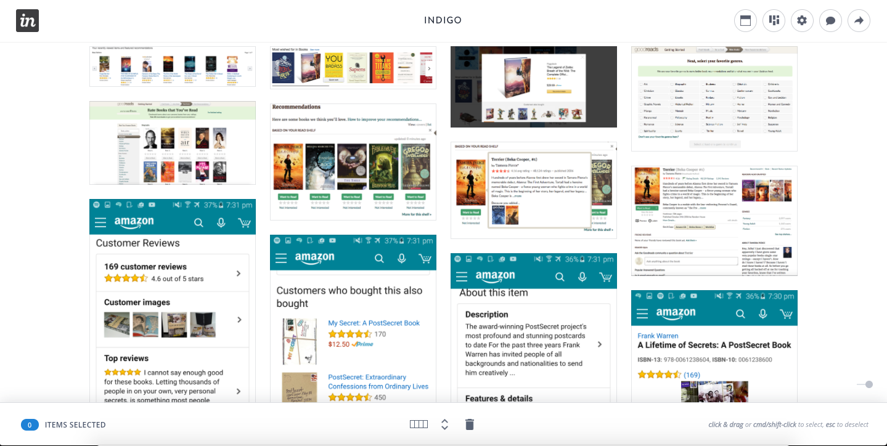Low Fidelity Prototyping
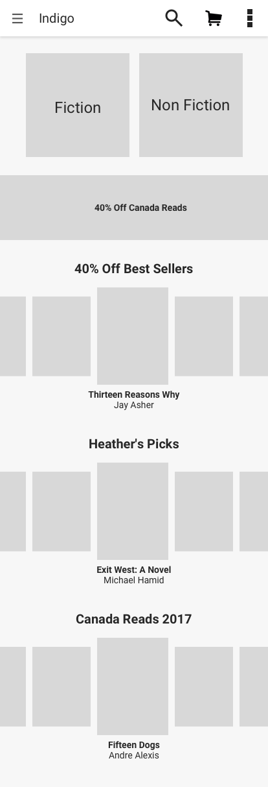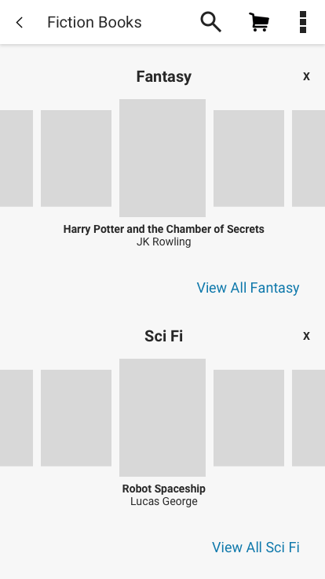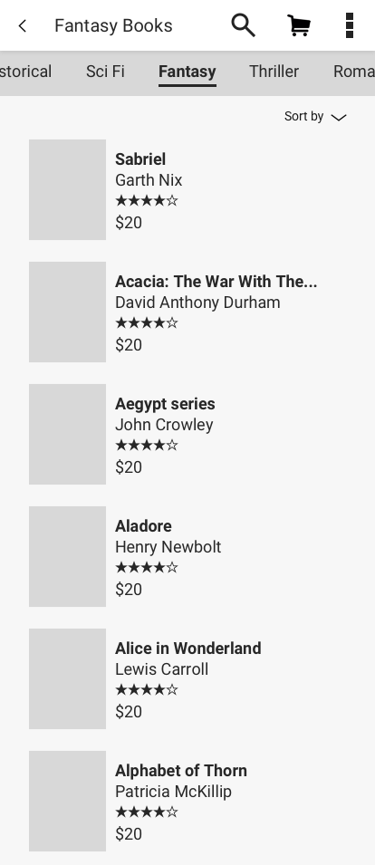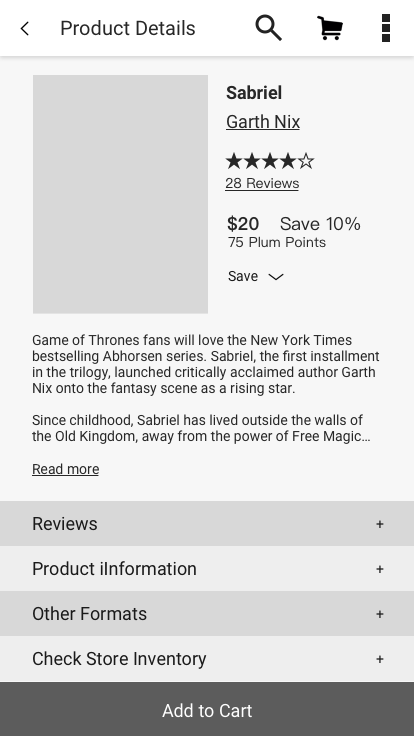High Fidelity Prototyping
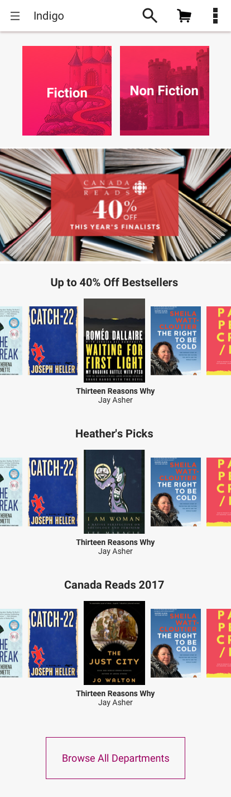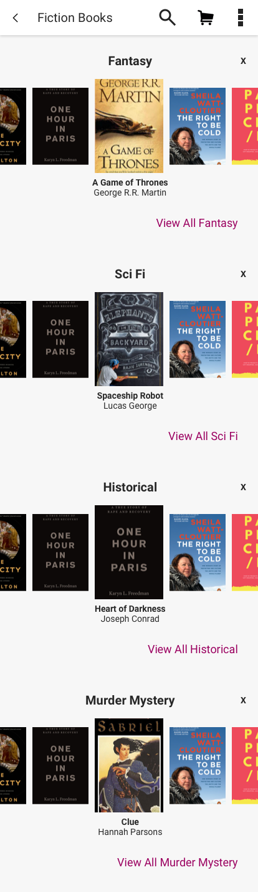 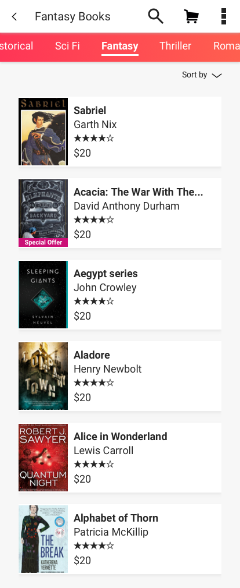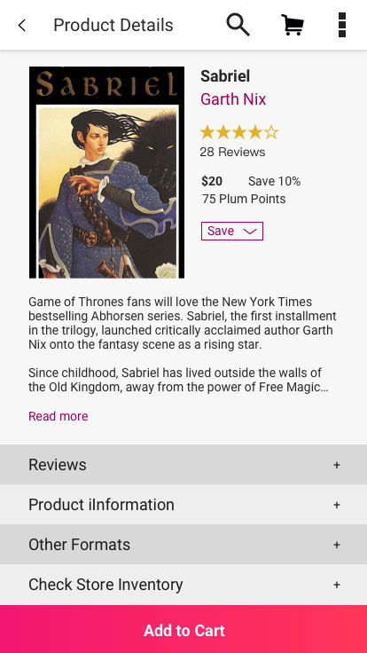Design Rationale
Sasha's tasks are:
-
Look for books she's been recommended (Search)
Look for new books she might like (Browse)
Look for books for her friends (Either browse or search, depending on the friend)
At a high level, I made it more about the books. I increased their prominence, reduced the steps to get to them and made it more efficient to look at more books at once. I also reprioritised the information in the product details page to make for quicker decision making, and reduced cognitive load.
Changes
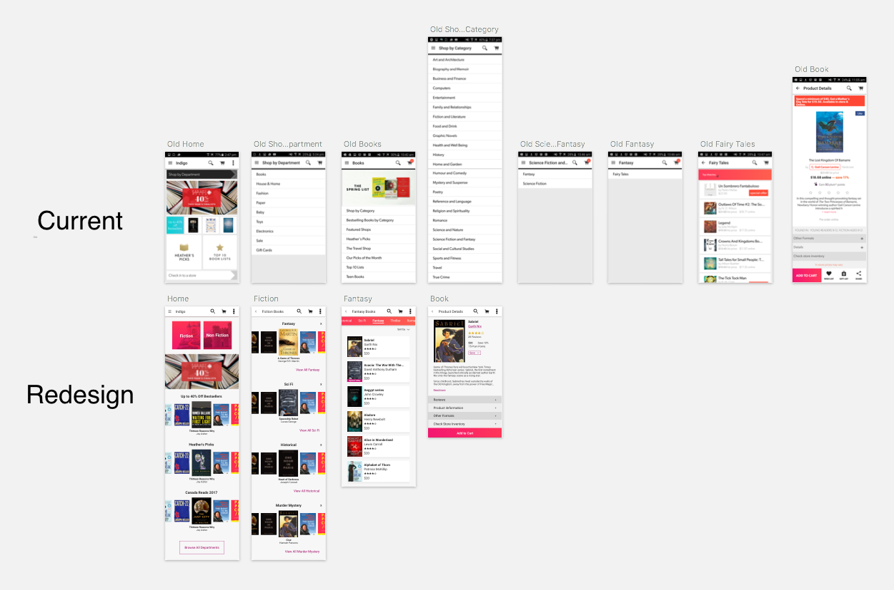Home
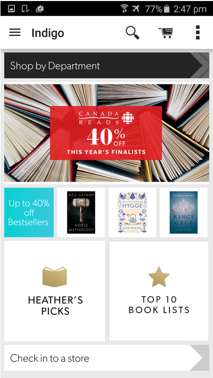
-
Separating out into Fiction and Non-Fiction, and then only using the top level genre categories (informed by survey data)
Moving "Shop By Department" lower down (as the non-book departments are less frequently used in the app, vs. the website) and replaced it with buttons for Fiction and Non Fiction books
Fiction and Non Fiction buttons are not full length so they have affordance
Increased the size of the carousel and replaced the buttons to lists with the actual list of books in carousel form
Categories
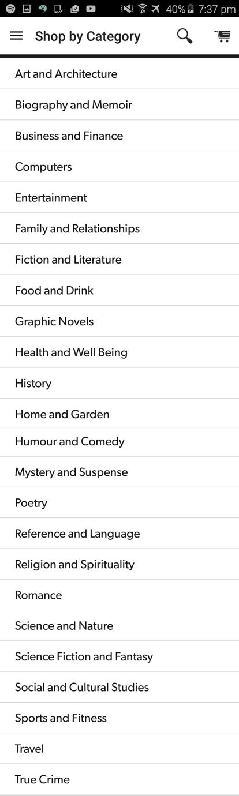
-
Replaced category lists and the buttons to them with carousels for more efficient browsing (to mimic the experience of browsing in store) and to visually differentiate the different genres
Book List View
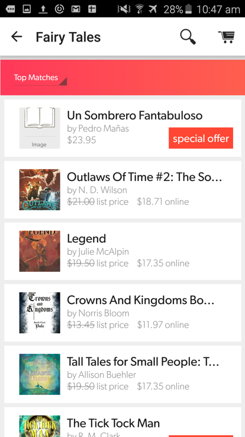
-
Added secondary navigation to the list view so Sasha can easily switch between genres
Higher contrast text for legibility
Product Details
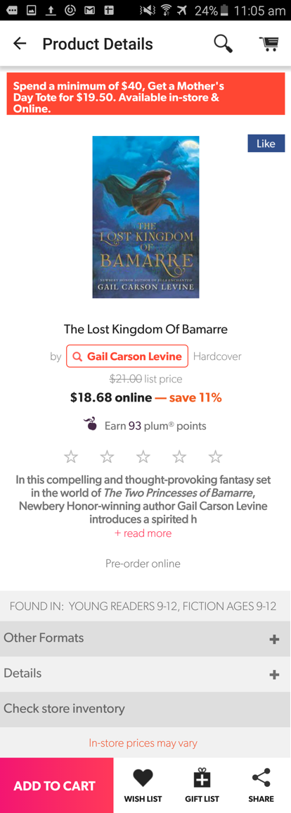
-
Got rid of the tote bag ad, the Like button and the link to learn about Plum Points
Made "Add to Cart" (the conversion goal) a full width button
Hid the Wish List and Gift List actions under a "Save" action on the page
Reduced the visual weight of the "Search by author" affordance
Left alignment for readability
Higher contrast text
Created more of a visual hierarchy with the content blocks


{kind=link}